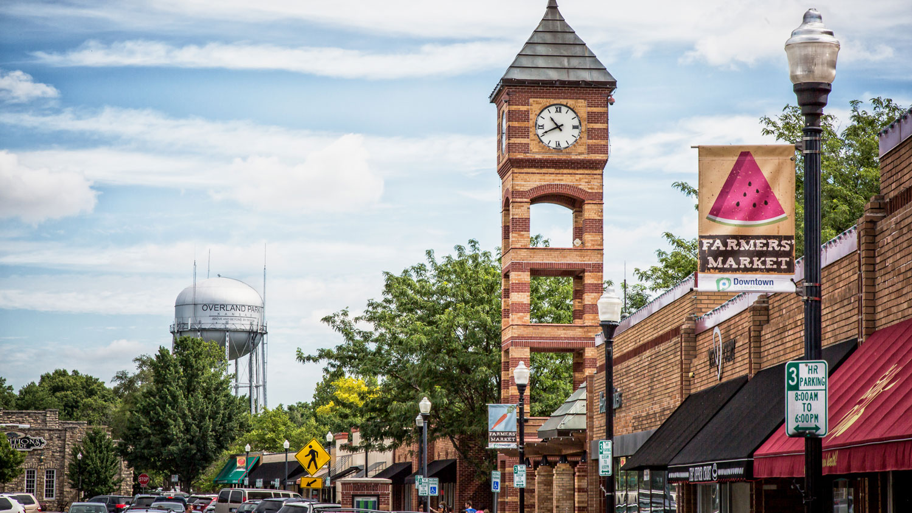
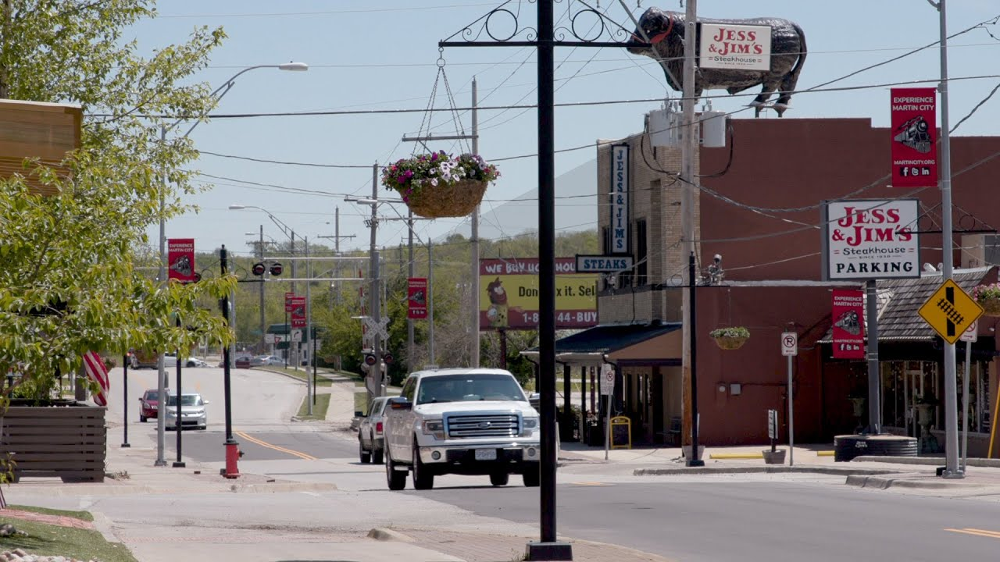
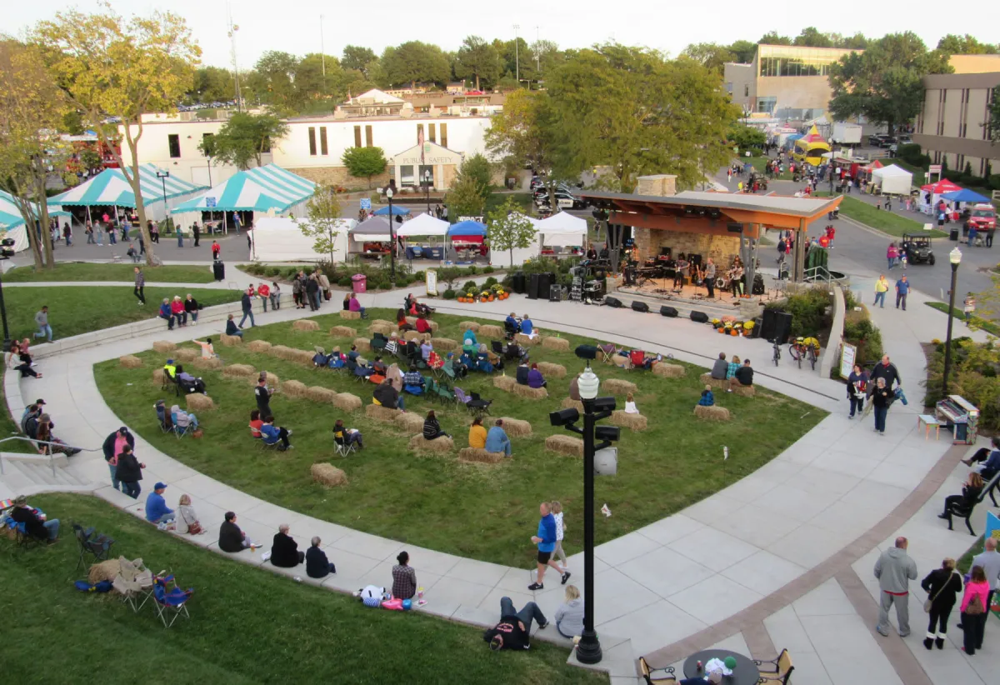
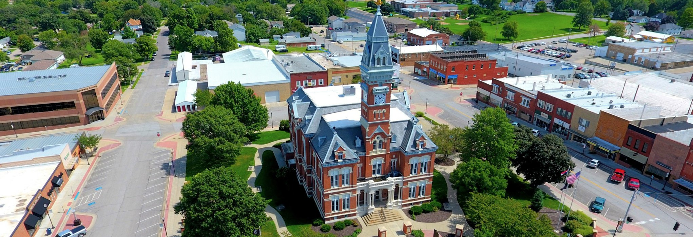
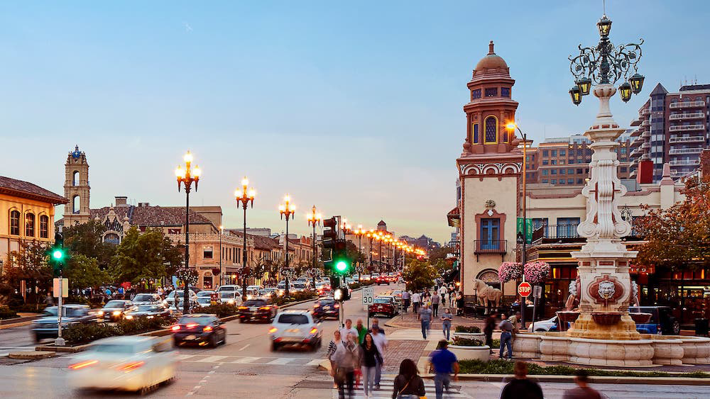
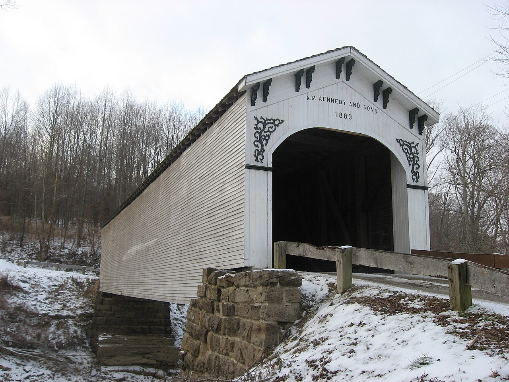
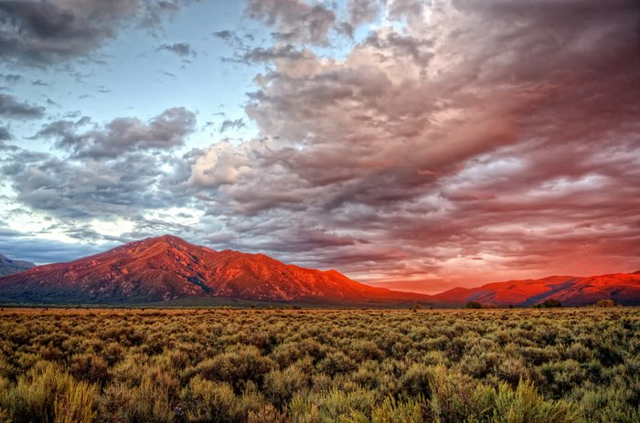
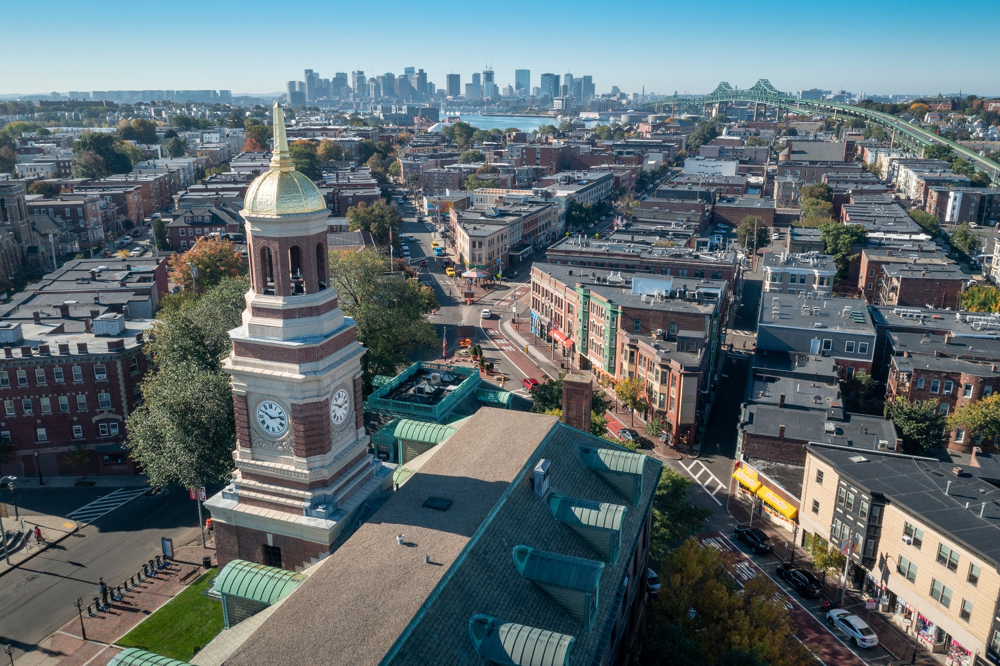
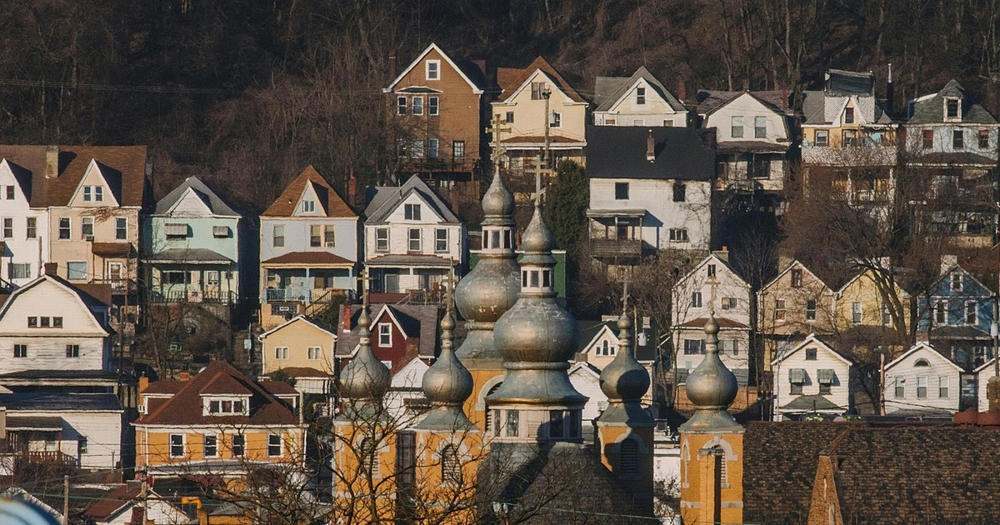
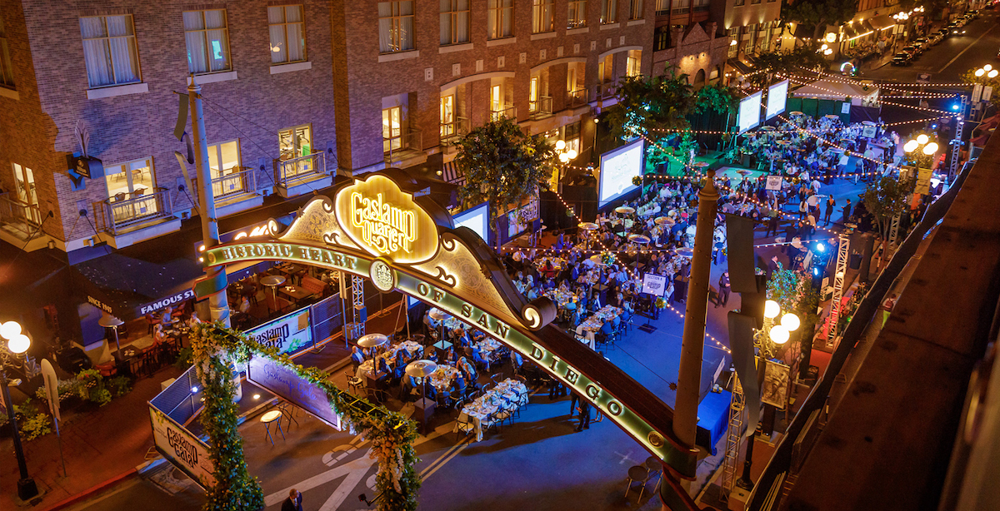

I've had the privilege of living in many places around the country. Below is a list of places where I've lived and worked. Click on a location to find out more about my experience there.
Overland Park, KS
Though most of my family is based in Missouri, I was born in Overland Park, Kansas, and lived there until shortly before my second birthday.
We lived in the heart of the city near Milburn Country Club at 71st and Conser, about six blocks north of downtown OP. I don't remember much
of this time period, but I do have plenty of memories visiting my aunt and uncle who also lived in Overland Park.

A view of downtown Overland Park. Image courtesy TBL Photography.
Martin City, MO
Shortly after I turned two, my family moved to Martin City, a neighborhood in South Kansas City. It was right on the edge of where suburbia met
farmland. I spent my childhood in this neighborhood playing outside before we even had a home computer, riding my bike around "downtown" and listening
for the train.

A view of downtown Martin City.
Gladstone, MO
Two weeks after my 13th birthday, during spring break, my family moved about 45 minutes north to Gladstone, a suburb of Kansas City north of the Missouri River. Although it was still
suburbia, it felt far more urban than our home in Martin City. This is where I spent my adolescence through early college years.

Linden Square near downtown Gladstone during the annual Gladfest fall festival. Image courtesy of KC Studio.
Maryville, MO
I moved to Maryville, Missouri for my undergraduate studies at Northwest Missouri State University. I lived on campus for my first year
and then found an apartment off campus two blocks from the main square for the rest of my time there. Maryville is a small town with a population
of only 12,000, including all of the college students, but it was clearly growing during my few years there.

Nodaway County Courthouse on Maryville's main square.
Kansas City, MO
After college, I found an apartment to share with my girlfriend (and future wife) while she was in graduate school just south of Kansas City's
Country Club Plaza. It was only a 10-minute walk to UMKC or to the many bars and restaurants in the city's urban core. We lived in a small 400 sq ft
studio in the neighborhood for 2 years while my wife finished her masters before we moved to the east coast.

Country Club Plaza at 47th and JC Nichols Parkway.
Bloomfield, IN
During the summer of 2005, I landed a summer job as a professional actor at the Shawnee Summer Theater in Bloomfield, Indiana. (Actors like John Belushi famously got their start there.)
I worked with quite a few people from Indianapolis, Chicago, and St. Louis and lived in a building connected to the
theater, which was probably the easiest commute for in-person work I'll ever have. Bloomfield is a very small town just outside the lesser small town of Bloomington,
home to the University of Indiana.

Richland-Plummer Creek Covered Bridge, just south of Bloomfield, Indiana.
Santa Fe, NM
Each summer during the months of May - August from 2006 to 2009, I worked at the Santa Fe Opera in Santa Fe, New Mexico. Being from the Midwest, it was my
first real experience living in the desert, and I loved it. The Santa Fe Opera is the largest summer opera festival in the world, and is the primary summer home for the Met in New York. Patrons could often be seen
tailgating in the parking lot, only they were wearing tuxes and gowns and feasted on lobster and champagne. The opera grounds sit next to the Sangre de Cristo mountains, which per their namesake, turn red at sunset.

Sangre de Cristo Mountains. Image courtesy of Dave Hensley.
Chelsea, MA
In late summer of 2010, my wife and I moved from our small studio apartment in Kansas City to the Box District in Chelsea, Massachusetts, a neighborhood just north of downtown Boston,
so I could start my graduate studies at Boston University. We lucked out finding a fantastic loft in a newly renovated building that was a former carboard box factory. While we ened up living
in Boston for only 5 months, it was one of my favorite places to live.

Chelsea, MA looking south towards Boston. Image courtesy of the City of Chelsea.
McKees Rocks, PA
On New Year's Day, 2011, my wife and I left Boston and moved into a newly constructed apartment in McKees Rocks, Pennsylvania, a few miles northwest
of Pittsburgh, so I could start a new masters program at Carnegie Mellon University.
Our second-floor apartment sat on top of a huge hill with a park and community garden nearby. Pittsburgh
was where our first daughter was born, and this was our first apartment we shared as a family.

Mckees Rocks.
Staten Island, New York
At the beginning of 2012, my wife and I moved with our daughter and her mother to a two bedroom apartment in the Randall Manor neighborhood on the north side of Staten Island. We commuted every day to
Manhattan by ferry. My wife worked in the Upper West Side, and I worked at the South Street Seaport and later at Union Square.
The Staten Island Ferry en route to Manhattan.
San Diego, CA
During 2022, I landed a job with the San Diego Symphony, and lived in the city for a short time before deciding that Kansas City was where I truly wanted to be.
San Diego was beautiful with excellent food, weather, and night life. I spent most of my time in the Gaslamp Quarter near the water at Jacobs Park, and ate my weight in
tacos and carne asada fries.

The Gaslamp Quarter at dusk.
Parkville, MO
My family ended up in Parkville, Missouri as our settled home, which made it really convenient to commute to downtown Kansas City. While it is the suburbs, our house is close to
every amenity we could possibly need - good schools, resataurants, stores, etc.